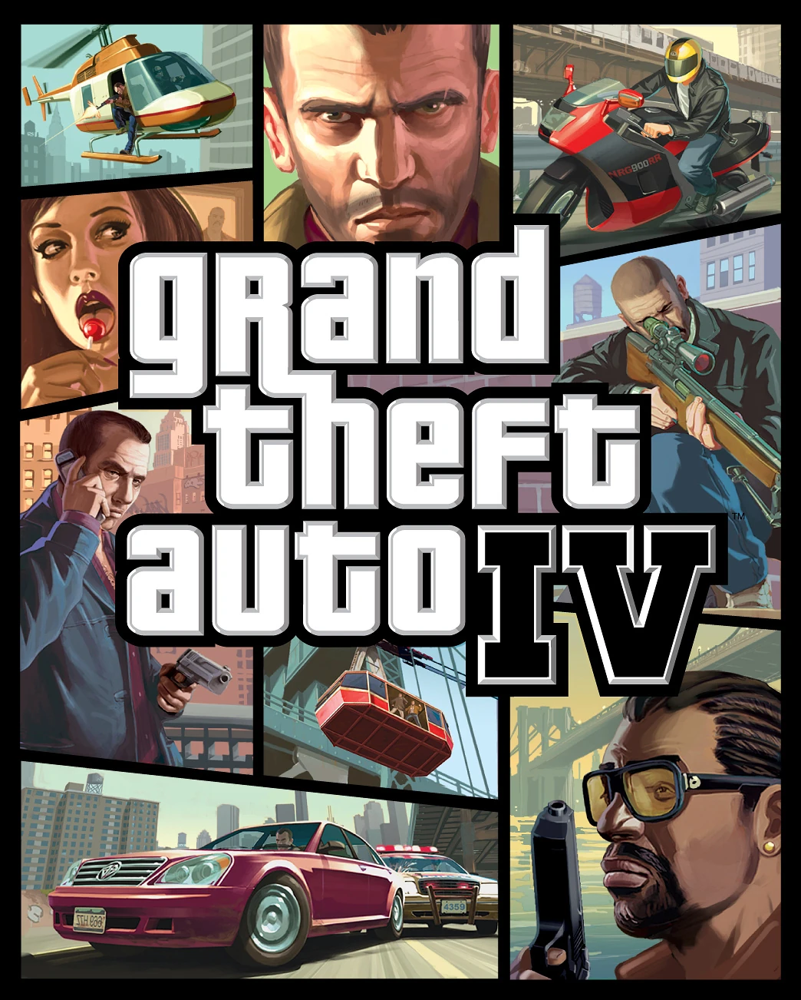
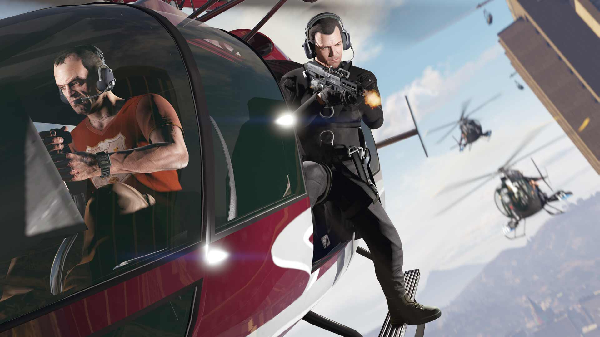
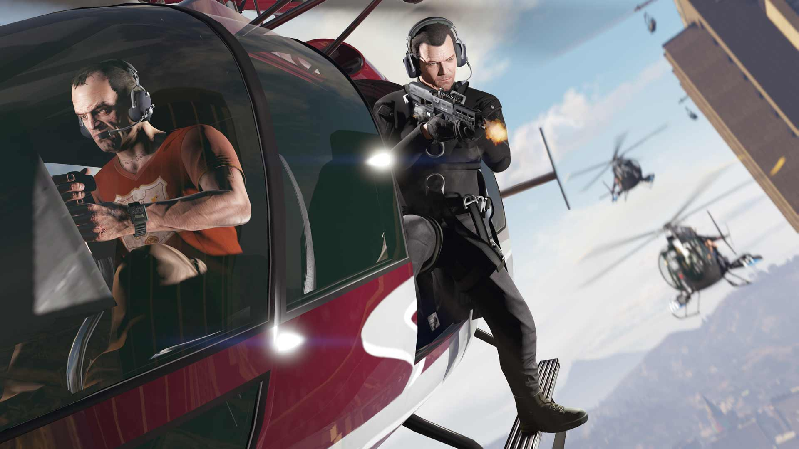
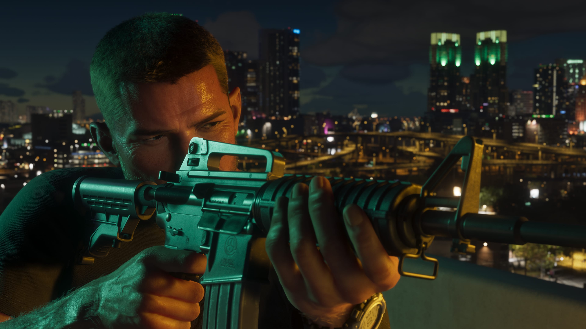
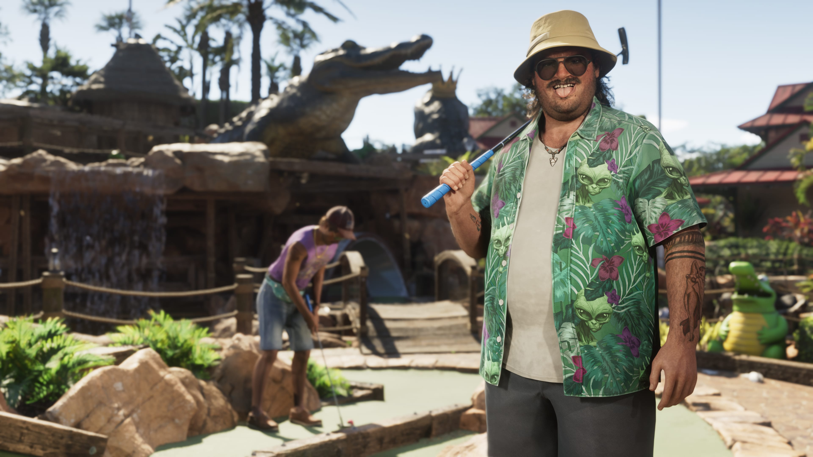
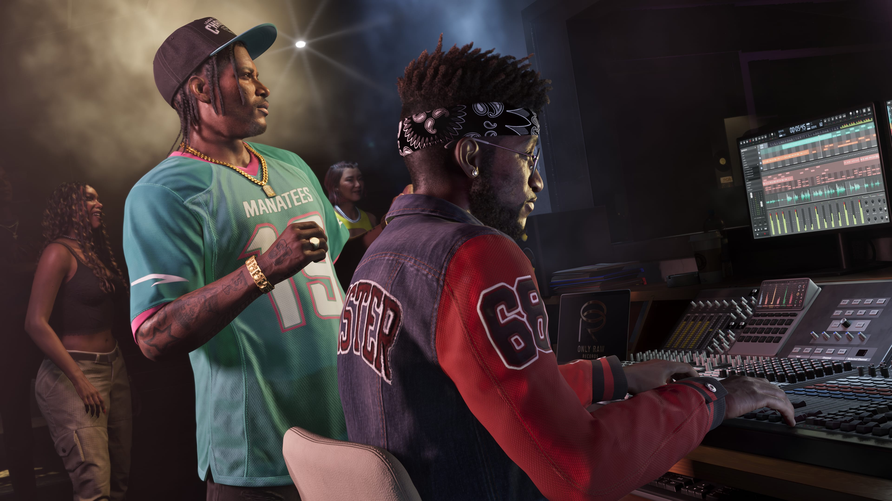

Historia de la saga Grand Theft Auto
La saga Grand Theft Auto (GTA) es uno de los mayores referentes en la historia de
los videojuegos. Desde
su primera entrega en 1997 hasta el esperado GTA VI, la franquicia ha evolucionado con mundos cada vez
más grandes, historias inolvidables y una libertad sin igual.
En esta sección repasaremos la historia completa de todos los títulos de la saga, sus curiosidades y
cómo se convirtieron en un fenómeno cultural que marcó a millones de jugadores.
Grand Theft Auto 1
En 1997, el mundo de los videojuegos vivió un antes y un después con el lanzamiento de Grand Theft
Auto 1, un título que, sin saberlo en ese momento, daría inicio a una de las sagas más influyentes
de la historia del entretenimiento digital.
Lo más llamativo era su propuesta: el jugador podía ponerse en la piel de un criminal y recorrer
libremente ciudades ficticias inspiradas en Nueva York, Miami y Los Ángeles. Desde una perspectiva
aérea —muy distinta a la de los juegos actuales— se podían robar coches, huir de la policía y
cumplir encargos para diferentes bandas, abriendo la puerta a una libertad que en esa época era
impensable.

Aunque su apartado gráfico era sencillo, lo que realmente captó la atención del público y de la
prensa fue la polémica: la violencia, los robos y la posibilidad de “hacer lo que uno quisiera” lo
convirtieron en noticia. Muchos medios criticaron su contenido, pero esas mismas críticas ayudaron a
disparar su popularidad.
Como curiosidad, el juego estuvo a punto de ser cancelado por problemas técnicos durante su
desarrollo, pero los errores del sistema que hacían a la policía más agresiva resultaron tan
divertidos que se mantuvieron como parte oficial de la jugabilidad. Un fallo convertido en
característica clave.
En definitiva, GTA 1 no solo fue un videojuego, sino el inicio de una fórmula de éxito basada en la
libertad total del jugador, la polémica y la innovación, sentando las bases de una saga que más de
25 años después sigue marcando historia.
Grand Theft Auto 2

En 1999 llegó al mercado Grand Theft Auto 2, la secuela que buscaba perfeccionar la fórmula que
había sorprendido dos años antes con el primer GTA. Aunque mantenía la perspectiva aérea, introdujo
mejoras gráficas, una jugabilidad más fluida y un detalle clave que lo hacía diferente: el sistema
de facciones criminales.
En esta entrega, el jugador podía trabajar para diferentes bandas, pero con un giro interesante: al
colaborar con una de ellas, la relación con las demás se deterioraba. Esto añadía una capa
estratégica que hacía que las misiones no fueran simplemente cumplir encargos, sino decidir con qué
grupo criminal mantener la lealtad.
Una curiosidad que pocos recuerdan es que GTA 2 fue uno de los primeros juegos en usar escenas de
vídeo con actores reales en su introducción, algo que buscaba darle un aire más cinematográfico y
serio, en contraste con su estilo visual simple dentro del juego.


La ciudad también estaba mucho más viva: los peatones tenían rutinas más variadas, había más
vehículos y hasta podían ocurrir accidentes de tráfico de forma aleatoria. Elementos que, en aquel
momento, daban la sensación de un mundo dinámico y sorprendentemente realista para finales de los
90.
Aunque no alcanzó la misma fama mediática que el primer título, Grand Theft Auto 2 consolidó la saga
y fue el puente que preparó el terreno para el salto revolucionario que llegaría con GTA III en
2001. Hoy se le recuerda como un clásico de culto que, pese a sus limitaciones técnicas, demostró
que la saga estaba destinada a evolucionar sin frenos.
Grand Theft Auto 3
En 2001, Grand Theft Auto III revolucionó la industria de los videojuegos al dar el salto a un mundo
totalmente tridimensional. Por primera vez, los jugadores podían explorar una ciudad abierta con
perspectiva en tercera persona, interactuar con peatones, vehículos y un entorno urbano mucho más
vivo que nunca. Liberty City, inspirada en Nueva York, se convirtió en el escenario perfecto para
una historia de crimen, corrupción y venganza.
El jugador encarnaba a Claude, un criminal silencioso que, tras ser traicionado durante un atraco,
busca abrirse camino en la ciudad a base de misiones para distintas bandas y personajes del bajo
mundo. La libertad de acción era impresionante: se podía robar coches, luchar con armas, evadir la
policía o simplemente explorar cada rincón de la ciudad sin límites.
Entre las curiosidades más llamativas, destaca que GTA III fue uno de los primeros juegos en ofrecer
una radio dentro del vehículo con emisoras y canciones con licencia, algo que aumentaba la inmersión
y permitía a los jugadores crear su propia “banda sonora” mientras recorrían la ciudad. Además, su
violencia y contenido adulto generaron polémica global, consolidando la saga como tema de debate en
medios de comunicación.
Otro dato interesante: muchos elementos que hoy parecen normales, como la policía reaccionando a los
crímenes, los ciudadanos huyendo o la presencia de misiones secundarias, fueron innovaciones para su
época y marcaron el estándar de los juegos de mundo abierto.
Grand Theft Auto III no solo cambió la saga, sino que transformó todo el género de acción y mundo
abierto, demostrando que los videojuegos podían ofrecer historias maduras y libertad total en un
entorno urbano vivo y dinámico.
Grand Theft Auto 4

En 2008, Grand Theft Auto IV marcó un nuevo hito en la historia de los videojuegos al trasladar la
acción a Liberty City completamente reconstruida en alta definición, inspirada en la Nueva York
moderna. La saga daba un salto gráfico impresionante, con personajes más realistas, animaciones
detalladas y un mundo abierto más vivo que nunca.
El jugador encarnaba a Niko Bellic, un inmigrante de Europa del Este que llega a Liberty City
buscando el sueño americano, solo para verse envuelto en el crimen, la traición y las complejas
relaciones de su familia y amigos. La historia destacaba por su tono más serio y maduro, explorando
temas como la moralidad, la venganza y las consecuencias de las decisiones del jugador.


Entre las curiosidades, GTA IV introdujo un sistema de física completamente nuevo, llamado Euphoria,
que hacía que los movimientos de los personajes, los choques de coches y las caídas se sintieran
mucho más naturales y realistas. Además, la ciudad reaccionaba de forma más coherente: peatones
cruzando, tráfico dinámico y un comportamiento de la policía más lógico.
Otro dato curioso es que el juego incluía un teléfono móvil con llamadas, mensajes y contactos, algo
revolucionario que permitía al jugador gestionar misiones, recibir llamadas de personajes del juego
y hasta jugar mini-juegos dentro del teléfono, aumentando la sensación de estar viviendo una
verdadera vida urbana.
Grand Theft Auto IV no solo mejoró la saga en gráficos y jugabilidad, sino que la llevó a un nivel
narrativo más profundo, demostrando que un juego de mundo abierto podía contar historias complejas y
ofrecer libertad total sin perder realismo.
Grand Theft Auto 5
En 2013, Grand Theft Auto V redefinió lo que un juego de mundo abierto podía ofrecer, llevando la
saga a una escala épica con la ciudad de Los Santos y sus alrededores, inspirados en Los Ángeles y
el sur de California. Por primera vez, el juego permitía controlar a tres protagonistas distintos,
cada uno con su historia, personalidad y habilidades únicas: Michael, Franklin y Trevor.
El jugador podía alternar entre ellos en tiempo real, lo que abría posibilidades estratégicas y
narrativas nunca vistas en la saga. La historia combinaba crimen, venganza, ambición y situaciones
cómicas, manteniendo el tono irreverente que siempre caracterizó a GTA, pero con un guion mucho más
pulido y cinematográfico.

 

Entre las curiosidades más destacadas, GTA V incorporó un mundo vivo y expansivo, con miles de
actividades secundarias: desde deportes y paracaidismo hasta inversiones en bolsa y compras de
propiedades. Además, el juego sorprendió con un nivel de detalle sin precedentes: tráfico dinámico,
cambios climáticos, vida salvaje y ciudadanos con rutinas propias que hacían que Los Santos se
sintiera realmente habitada.
Otro dato curioso: GTA V lanzó también su versión online, GTA Online, que se ha mantenido activa
durante años con actualizaciones constantes, eventos y expansiones, convirtiéndose en uno de los
juegos multijugador más exitosos y lucrativos de la historia.
Grand Theft Auto V no solo consolidó la saga como un referente absoluto de los videojuegos de mundo
abierto, sino que demostró que era posible combinar libertad total, narrativa compleja y un universo
vivo que sigue fascinando a millones de jugadores en todo el mundo.
Grand Theft Auto 6
Grand Theft Auto VI se ambientará en el estado ficticio de Leonida, inspirado en Florida, con una
versión moderna de Vice City y zonas como Port Gellhorn, Mount Kalaga, Grassrivers y las Leonida
Keys; se espera un mapa más grande que GTA V con más de 700 edificios accesibles. Los protagonistas
serán Jason Duval y Lucia Caminos, una pareja criminal al estilo Bonnie y Clyde, siendo Lucia la
primera protagonista femenina no opcional de la saga. El juego mejorará el cambio entre personajes,
contará con un sistema de búsqueda de seis estrellas, mayor interacción con el entorno y viajes
aéreos más realistas. Su lanzamiento está previsto para el 26 de mayo de 2026 en PS5 y Xbox Series
X/S, con un precio estimado de 70 a 100 dólares, y analistas predicen que podría generar hasta 3.200
millones de dólares en el primer año. Entre los rumores más curiosos destacan vehículos “calientes”
tras cometer un crimen, mapas que evolucionan con el tiempo y escenas con gran detalle ambiental,
todo mientras Liberty City promete un mundo vivo, dinámico y lleno de oportunidades de crimen,
exploración y actividades secundarias, aunque es importante recordar que muchas de estas
especulaciones aún no han sido confirmadas oficialmente por Rockstar Games.
Personajes :
Jason Duval


Lucia Caminos

Boobie Ike

Brian Heder

Cal Hampton


DreQuan Priest

Raul Bautista


Real Dimez